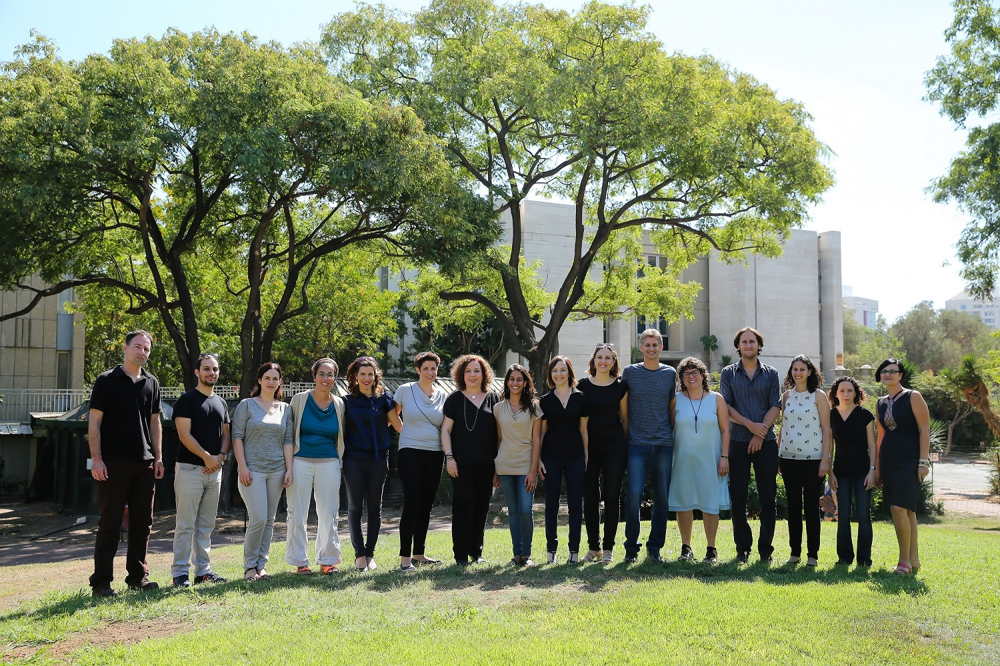

Welcome to the Positive Family and Developmental Psychology Lab

About
The lab is aimed at gaining a deeper understanding of human life-span development, with a special interest in life transitions and their potential to invoke personal growth, as well as the unique stage of adolescence and the tendency of adolescents to engage in risk taking.
read more >Research
Transition to Parenthood and Grandparenthood
Mothers of Singletons and Twins (MOST)
Positive Outlook on Women Entering Reproductive treatments (POWER)
Driving Styles (MDSI) in the General Population
Risky Driving among Young Drivers
Driving in the Ultra-Orthodox Population in Israel
Terror Management Theory (TMT) in Everyday Life
News
We are very excited to announce that a new book: Pathways and barriers to parenthood – Existential concerns regarding fertility, pregnancy, and early parenthood, edited by Prof. Orit Taubman – Ben-Ari, has recently been published by Springer.
read more >